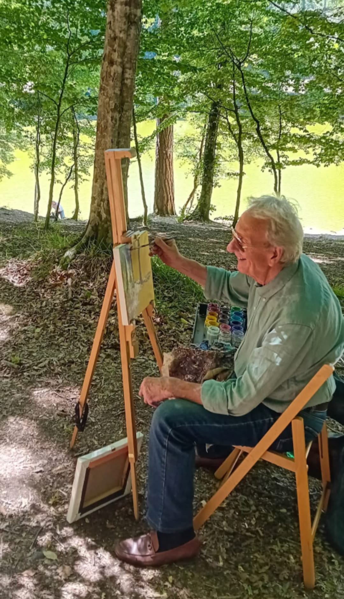
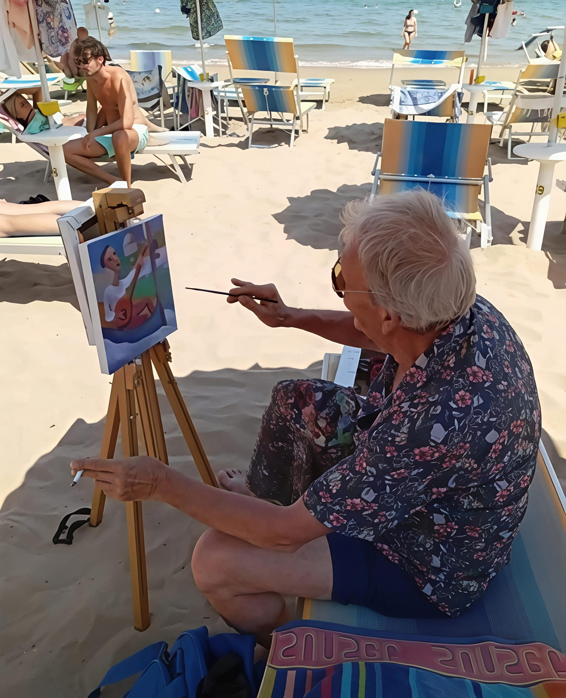
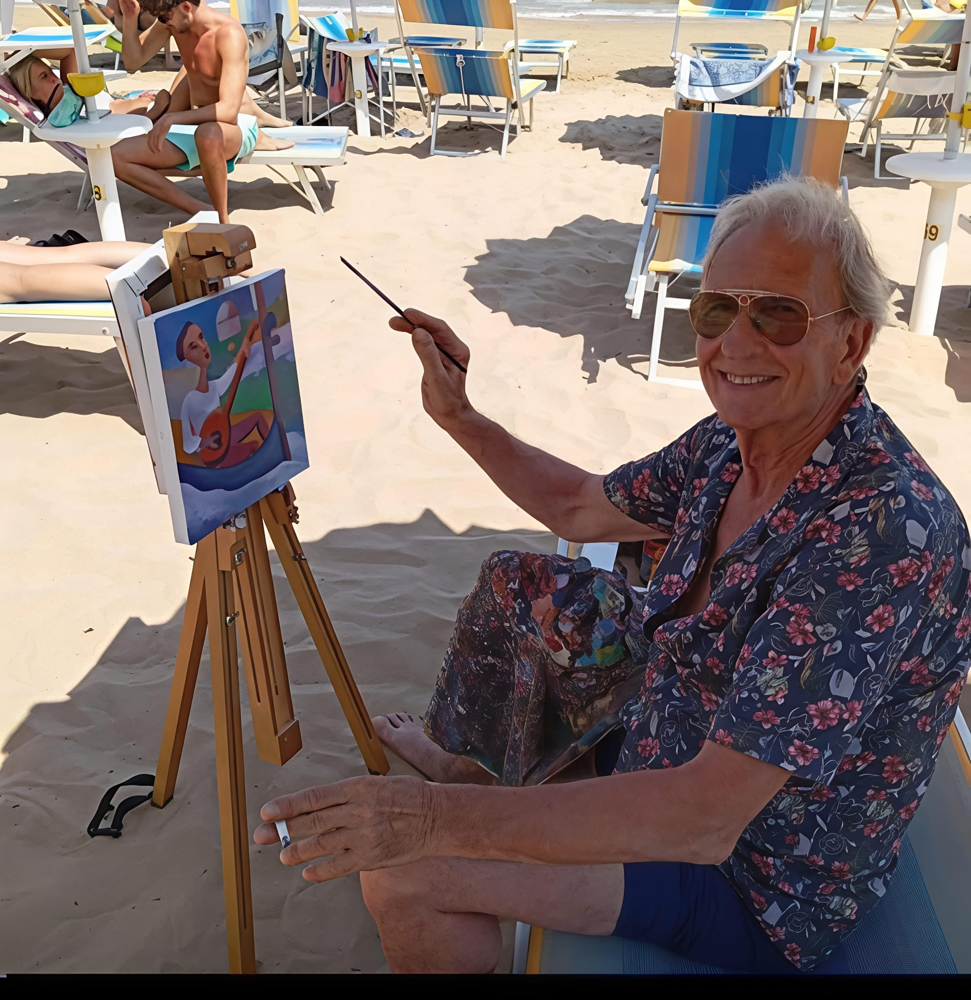
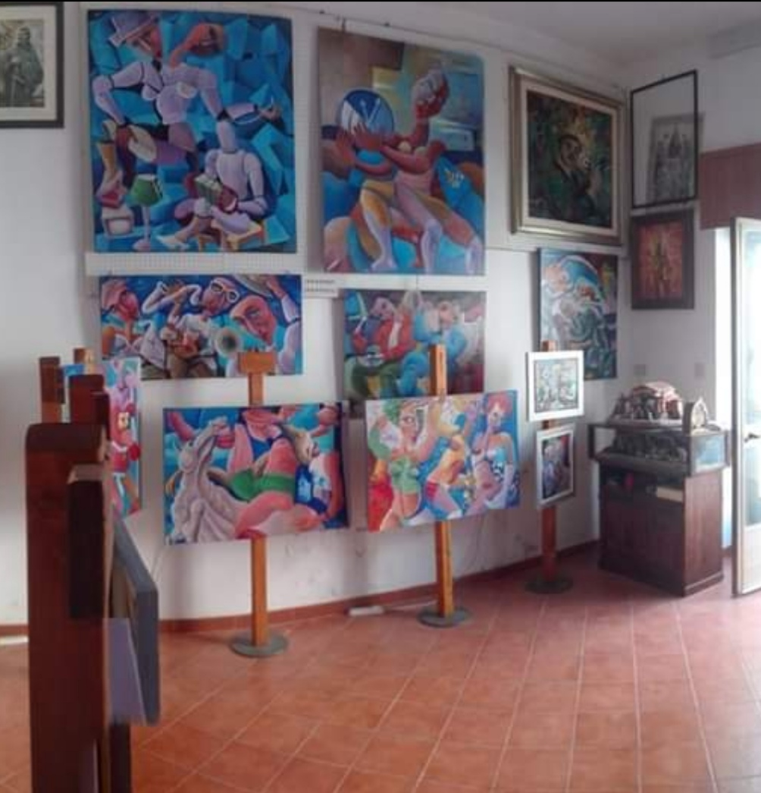

Arte Contemporanea
Pittura sul Teatro della Vita
L'arte di Giacomo De Troia cattura le complessità, le emozioni e le storie che animano il nostro quotidiano
Esplora le Opere →Opere Selezionate
Il Teatro della Vita su Tela

Protagonisti
2023 — 113×121cm

Musa Assassina
2020 — 80×100cm

Fiat Voluntas Tua
2020 — 92×130cm

Riaccendiamo la Cultura
2017 — 110×120cm

La Strumentista
2019 — 54×74cm

Burn
2020 — 58,5×67cm

L'Artista
Giacomo De Troia
Nato a Lucera nel 1961, Giacomo De Troia manifesta un talento innato per il disegno fin dalla giovane età. Inizia la sua attività creativa con terracotta ornamentali, ceramiche e vetrate d'arte, prima che la necessità quasi biologica di esprimersi lo conduca alla pittura.
Leggi la biografia completa →Filosofia Artistica
Il teatro della vita esplora la drammaticità e la bellezza delle esperienze umane. Attraverso le opere, l'artista cerca di rappresentare le gioie e le sfide che definiscono la nostra esistenza, dando voce alle narrazioni del quotidiano.
Riconoscimenti
Tutti questi giochi di forme e colori apportano dinamismo all'immagine, e nello stesso tempo, rappresentano la routine dei tanti giorni comuni vissuti
Echi evidenti dal passato, di surrealismo, futurismo e dell'importante allegria di Fortunato Depero. La sua è una proposta di loisir, sostenuta da tinte luminose
Dietro le Quinte
L'Artista al Lavoro



Video